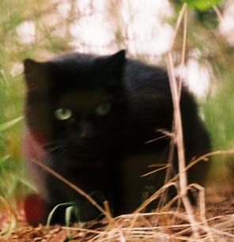

V050401b>
2022-05-06
-12:10 -0700
|
|
|
A version of this article appeared on Orcmid's Lair shortly after midnight Friday, April 22, 2005.
Having three black cats leads to our noticing how many other black cats there are in our neighborhood, and how many pass through our yard. I'm sure it is partly the yellow-Volkswagen phenomenon: It is noticeable for us because we have black cats in the house. All the same, I don't remember seeing many black cats when I was growing up, and now it is not an unusual occurrence. I can remember wanting to see a truly-black-all-over cat because I'd heard all of the stories about them, including the role we give them in Halloween, but it was a long time before I encountered a genuine black cat.
Our cats are of the nondescript breed known as "Bombay," and I am not sure how the blackness is accounted for. The two litter-mate "kids" of our pride have a tiny pure-bread Burmese mom, Cleopatra, who's never told who her first fling was with in Mountain View, California. Cleo's genes are expressed in the sable reflection that you can see sometimes in the kids' coat, and also in their golden eyes. Her daughter is also tiny like mom. Our senior cat, Askani, was born in the Baltimore area and we have no clue to her lineage.
When black cats stroll by in the neighborhood, it can be startling to see. We often wonder whether one of our cats has jumped out a window and is exploring the yard. This leads to a hurried census of the household, especially if we don't get a close look at the outdoor critter. In many cases, the visitor resembles Askani, who has been a hefty cat, as many of our outdoor passers-by are. I can also recognize Askani, our couch commander, in the postings about Dorothea Salo's cat, Didi, right down to the few light hairs on her chest.
The appearance of a black shmoo is a pose that Askani has perfected too, one also affected by the well-fed neighborhood Bombays.
My home office is in the basement level of the house, and I have
a wide, low single-pane window that gives me a ground-level view out the side of
the house. 
They have never seen a cat wander by this window, because there would be a certain memorable mayhem in such an event. But when I am working quietly in my office, I often see a neighborhood scout stroll past. They are usually startled to see me there, and are often not so nonchalant about it. My March visitor had been examining something in the plantings off to the side of the window when I noticed. I managed to reach my camera and work to the opposite edge of the window for a snapshot. It was unexpected for the cat to remain in one place so long, and I was able to focus the camera, more-or-less, and get a picture through the angle of the window.
I think the cat heard the shutter mechanism and noticed my movement, because it slumped down in a kind of timid wariness. My second snapshot was quite enough and the animal scuttled off under the corner rhododendrons and out of site. Similarly, our Askani was a timid indoor-outdoor cat when she first joined our household in 1995. She retains some of that furtively alert quality ten years later, although she seems completely at ease most of the time.
There was a black Bombay kitten that visited our back porch last Fall, and Vicki would put water out for her. I wonder if this is that little one, grown and wiser in the ways of the street life of cats. There's no collar and we don't know if there's a household haven nearby. She seems clean and well-fed enough to be someone's outdoor cat. [dh: 2005-04-22]
| You are navigating Orcmid's Lair |
created 2004-11-22-21:35 -0700 (pdt) by
orcmid |